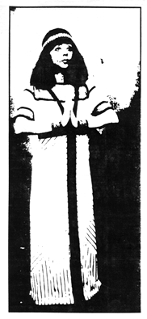

Between Niedecker and Zukofsky, an excerpt by Glenna Breslin
Being Antinova by Eleanor Antin
BETWEEN NIEDECKER AND ZUKOFSKY, an excerpt
Lorine Niedecker and Louis Zukofsky exchanged letters and manuscripts from 1931 until her death in 1970. Their voluminous correspondence, now in the Humanities Research Center, University of Texas, Austin, provided the isolated, largely self-educated Niedecker with conversation about her readings in the arts and sciences, debate about poetry and poetics, and stimulation to compose.
Niedecker's correspondence with Zukofsky allowed her to share events from her daily life with someone whose sensibility was like her own. Not many of her rural Wisconsin neighbors would have understood the humor Niedecker found in this bit of her mother's conversation:
 Last night we were sitting here and I was
reading and B.P.'s voice came out of the void:
"Some good binding material here." I looked and
saw nothing. Finally she explained that Henry
had brought home bananas, potato chips, cheese
and crackers. How do things stack up and
cohere by you? (April 29, 1945)
Not many would have understood her reaction to a local suicide:
A woman in Fort threw herself into the river off
the bridge one night last week. "She must have
been insane," they said -- you can't help but
feel it must have been a lucid moment
among the patches of ice. (November 30, 1947)
The seasons weather accounts of her activities, and observations of her human and animal neighbors produced lively letters and sometimes the process of writing to Zukofsky stimulated a poem. She quips in one letter: "Here I am for a half hour -- everytime I wanted to say something to you I found it so good I worked it out further on note paper -- my, my, you don't suppose the Muse is musing?" (Christmas, 1947). One advantage of a conversation carried on at a distance -- by letter, not phone -- is that you have quiet and leisure to let insights percolate and develop, without interruption.
A sequence of letters written during May and June, 1948, provides a wonderful example of how materials cohere in the poet's mind during the composition of "I rose from marsh mud." Niedecker shares lengthy descriptions of the spring season and her activities hiking through woods and marshes, bird-watching, and gardening. In a fragment dated May 23, she alludes to a fallow period: "Now I find when one hasn't been writing for awhile, you start off in something like that soft vein (the "sweet-worded. . . almost artificial" style of "the old time poets"), but as soon as you get used to writing again, you pick up everything for poetry, get into every day speech, etc. . . ." This series of letters to Zukofsky must have been part of that process of getting "used to writing again."
A fragment dated June 6 begins: "Nature, last week, including human nature." Niedecker describes handmowing a path to the river, discovering red dogwood and ash saplings needing protection from the neighbor's power mower, and losing them the next day to "his infernal machine." A killdeer's nest on a pile of stones near her house is robbed by "the children up the line," but "their mothers made 'em put the eggs back and lo the bird is sitting on 'em as tho nothing ever happened."
In a two-page fragment dated June 19, Niedecker describes "A little marshy, soggy piece west of the house that one could almost call the primordial swamp. . . I cut grass there and planted willows, my eyes to the green ground so much that I can almost feel sea-water in my veins. . . little things like algae, fine-haired weeds mixed with large-blade grass, and I think: Equisetum -- little fern-like plants with hollow stems -- imagine that! -- if equisetum is its name -- like that guy that found out he had spoken prose all his life." She reports transplanting willows from the lake shore "for my own beginning of creation," enumerates the wild flowers she discovers ("such sweet little things"), and shares excerpts from a book by Donald Peattie that she's reading -- information about the luminous bacteria that cause fireflies to light up, and this quotation: " 'Good poetry is swift-winged, essential and truthful description -- and so is good science.' " She encloses a bit of dogwood bloom and stem with the promise, "Yes. I'll send you a red dogwood root in the fall, Zu, when it's dormant. I never thought of it for your garden because our land is low and moist, but we'll try it and you'll maybe have a bit of Koshkonong there."
Finally, a postcard dated June 22 juxtaposes her adventures in "the primordial swamp" and her attendance at a church wedding, with the ironic reflection prompted by the conjunction.
Saturday I arose from my primordial mud with bits of algae, equisetum etc.to attend an expensive church wedding. Whole of history went thru my head, a big step from algae to CHURCH (for some people there can be no procreation without the Church!),* from cell division to the male sweating it out while the other collects International Sterling Silver and donns and takes off satins and continues to sweat to pay for 'em. The little slave girl bride and the worse slave, her husband.
The killdeer still sitting on the eggs. The much-vaunted Instinct in nature may be going astray.
The poem that evolved from these experiences and the letters sharing them with Zukofsky is one of Niedecker's most witty and resonant short poems. Even the physical confines of the penny postcard contributed to its production, moving the poet toward that essential stage in her composing process she described to Cid Corman: "For me the sentence lies in wait -- all those prepositions and connectives -- like an early spring flood. A good thing my follow-up feeling has always been condense, condense. "(1)
I rose from marsh mud,
algae, equisetum, willows,
sweet green, noisy
birds and frogs
to see her wed in the rich
rich silence of the church,
the little white slave-girl
in her diamond fronds.
In aisle and arch
the satin secret collects.
United for life to serve
silver. Possessed.(2)
-- Glenna Breslin
1 Letter to Cid Corman, February 18, 1962, in Lisa Faranda's Between Your House and Mine: The Letters of Lorine Niedecker to Cid Corman, 1960-- 1970, diss. Iowa 1983, p. 39. Quotations of Niedecker's work are by courtesy of Cid Corman, literary executor for Lorine Niedecker, her letters are quoted with the permission of The Humanities Research Center Library, Austin, Texas.
2 T&G: The Collected Poems 1936--1966 (Penland, N.C.: The Jargon Society, 1969).
* and International Sterling (handwritten in margin)
Glenna Breslin is currently working on a critical biography of Lorine Niedecker. An essay of hers on Niedecker will appear next year in an anthology looking at the work of neglected contemporary American poets. Her paper, from which the above piece is excerpted, will be presented at The Philological Association for the Pacific Coast convention this month. Breslin teaches at St. Mary's College of California.
BEING ANTINOVA By Eleanor Antin
(Astro Arts 1983)

For three weeks in 1983, performance artist Eleanor Antin lived as "Eleanora Antinova," once a celebrated Black ballerina with Diaghileff's Ballet Russe, now retired. Antin, in her persona, came to New York City to arrange an exhibition of drawings at a gallery and to appear in a few performances as Antinova on stage. This journal of her three week experiment is an exploration of the experience of artifice, of variations in consciousness, appearance, and interaction. She examines the effects of this performance both on herself and on those it impinges upon. The writing, which presents a traditional syntactical and linear surface, often naive, is itself an artifice: it is in fact a continuous, self-referential, layered and revealing examination of the impersonation.
The deliberate creation of a false persona is only one of the impersonations that interest Antin. The ubiquitous and unavoidable "performances" in her own everyday chameleon-like changes of perception and behavior also command her attention; her paragraphs jump without warning from one identity to another: the ballerina of stature and renown, the awkward adolescent (thrilled that so glamorous a figure as an airplane stewardess chooses to sit beside her), the knowledgeable not-quite-contemptuous critic who says to the ignorant stewardess, "formalism and vulgarity go hand in hand."
There are many others: friend, comic, intellectual, artist, horny woman confronted by her youthful idealistic girlhood self, the flippant, frightened woman -- the journal "being" all of them, interchangeable and fluid, in easy acceptance and/or conscious transition.
Antin spends almost two hours a day making up for the part, darkening her skin, becoming "glamorous." She has had long porcelain fingernails applied to her "stubby fingers with their dog-eared, bitten-down nails." She stays in a hotel at 25 Central Park West which her New Yorker sister tells her is "an appropriate stage set for Antinova," and worries about her relationship with the doorman. She pays close attention to the implications of her Black masquerade, registers subtle interchanges with real Blacks -- feelings of guilt as well as comraderie and humor.
In a traditional personal journal, the writer ordinarily tries to uncover and present an identity to the self and often to a reader also, imagined or real. Antin, however, seems to accept plural identities, deliberate and/or inadvertent; she is interested in the nature of the performances wherever they occur, in herself and in others. Her resulting perceptions join, in the writing, to create an illusion and a reality. The layerings, interacting -- persona emerging from persona -- are embodied in her language so as to present the deceptive appearance of a single voice.
--Frances Jaffer
Frances Jaffer has published two books of poems, She Talks to Herself in the Language of an Educated Woman (Kelsey St. Press, 1980) and Any Time Now (Effie's Press, 1977). A new, larger collection of her poems will be brought out by HOW(ever) later this year. An interview with Jaffer appears in Second Stories, edited by Gloria Frym (Chronicle Books, 1979).

go to this issue's table of contents
|